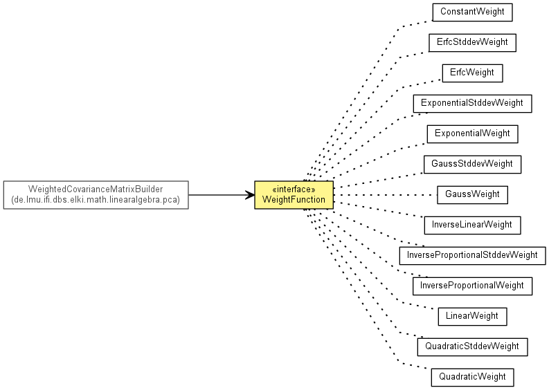

de.lmu.ifi.dbs.elki.math.linearalgebra.pca.weightfunctions
Interface WeightFunction
- All Superinterfaces:
- InspectionUtilFrequentlyScanned
- All Known Implementing Classes:
- ConstantWeight, ErfcStddevWeight, ErfcWeight, ExponentialStddevWeight, ExponentialWeight, GaussStddevWeight, GaussWeight, InverseLinearWeight, InverseProportionalStddevWeight, InverseProportionalWeight, LinearWeight, QuadraticStddevWeight, QuadraticWeight
public interface WeightFunction
- extends InspectionUtilFrequentlyScanned

WeightFunction interface that allows the use of various distance-based weight
functions. In addition to the distance parameter, the maximum distance and
standard deviation are also given, to allow distance functions to be
normalized according to the maximum or standard deviation.
|
Method Summary |
double |
getWeight(double distance,
double max,
double stddev)
Evaluate weight function with given parameters. |
getWeight
double getWeight(double distance,
double max,
double stddev)
- Evaluate weight function with given parameters.
Note that usually implementations will ignore either max or stddev.
- Parameters:
distance - distance of the query pointmax - maximum distance of all included pointsstddev - standard deviation (i.e. quadratic mean / RMS) of the
included points
- Returns:
- weight for the query point